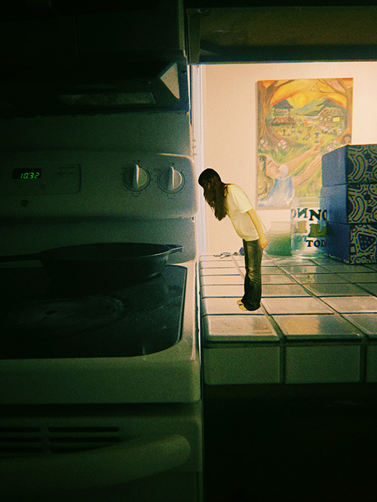
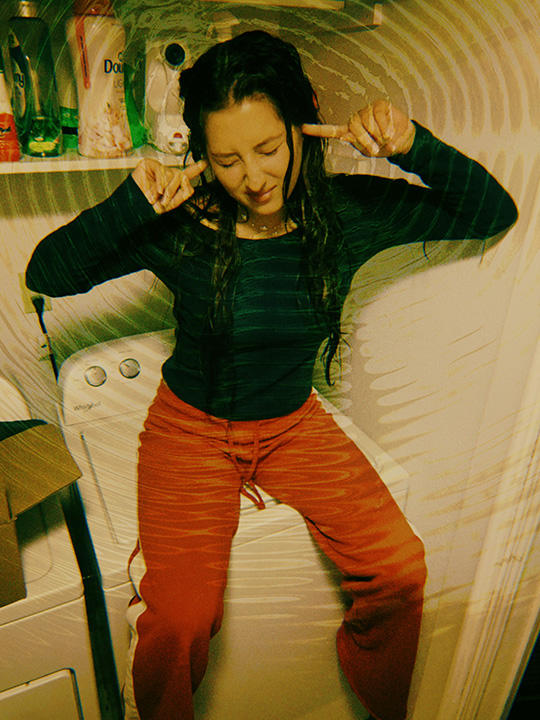

Yovi

likes
drawing on fogged-up glass
Everyone in the crowd has a life as vivid as yours.
Scroll to look a little closer.






Every stranger here has a list like this.
You walked right past them.